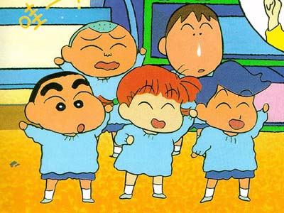

Crayon Shin-chan

Useful Links
Anime Web Turnpike: Crayon Shin-chan Links
(you have to scroll down a bit)
Gameboy Games
Crayon Shin-chan 4: Ora Noitazura Daihenshin
Crayon Shin-chan ~Ora to Shiro wa Otomodachi da yo
SNES Games
Crayon Shin-chan 2: Daimaou no Gyakushuu
Sufami Turbo Games
Crayon Shin-chan Nagagutsu Dobon!
Anime Video Game Resource Center © 1998 by
Luis A. Cruz